The following data set contains over 250,000 survey from Americans, with the target variable measuring whether the respondent has diabetes of prediabetes (stored in Diabetes_binary).
There are 21 other variables that can be used to predict which individuals have diabetes/prediabetes. Among these are whether the individual has high blood pressure, and whether the individual has high cholesterol. Other possibly relevant health related variables are whether the individual has had a heart attack or has/had heart disease, whether the individual is a heavy drinker, whether the individual eats fruits and vegetables, whether the individual has been physically active in the last 30 days, whether the individual is/was a smoker, and the individual’s BMI. The individuals’ general health was also measured by asking them their general health on a five-level scale from “poor” to “excellent”. The individuals’ sex and age (age being grouped into age brackets) were also collected. The individual’s household income bracket was also recorded.
Data
library(tidyverse)
── Attaching core tidyverse packages ──────────────────────── tidyverse 2.0.0 ──
✔ dplyr 1.1.4 ✔ readr 2.1.5
✔ forcats 1.0.0 ✔ stringr 1.5.1
✔ ggplot2 4.0.0 ✔ tibble 3.3.0
✔ lubridate 1.9.4 ✔ tidyr 1.3.1
✔ purrr 1.1.0
── Conflicts ────────────────────────────────────────── tidyverse_conflicts() ──
✖ dplyr::filter() masks stats::filter()
✖ dplyr::lag() masks stats::lag()
ℹ Use the conflicted package (<http://conflicted.r-lib.org/>) to force all conflicts to become errors
# read in data on diabetesdiabetes_data <-read_csv("diabetes_binary_health_indicators_BRFSS2015.csv")
Rows: 253680 Columns: 22
── Column specification ────────────────────────────────────────────────────────
Delimiter: ","
dbl (22): Diabetes_binary, HighBP, HighChol, CholCheck, BMI, Smoker, Stroke,...
ℹ Use `spec()` to retrieve the full column specification for this data.
ℹ Specify the column types or set `show_col_types = FALSE` to quiet this message.
# view the data and its structure after initially reading indiabetes_data
Our variables have been converted to factors with appropriate level names, and our date has no missing values! We are ready to to conduct exploratory data analysis on our data through numeric summaries, tables, and visualizations.
Summarizations
Two-Way Contingency Tables
# two-way contingency table of whether someone has diabetes/prediabetes and whether they have high blood pressuretable(diabetes_data$Diabetes_binary, diabetes_data$HighBP)
No High Blood Pressure High Blood Pressure
No Diabetes 136109 82225
Prediabetes/Diabetes 8742 26604
It appears that those with high blood pressure are more likely to have diabetes or prediabetes than those who do not.
# two-way contingency table of whether someone has diabetes/prediabetes and whether they have high cholesteroltable(diabetes_data$Diabetes_binary, diabetes_data$HighChol)
No High Cholesterol High Cholesterol
No Diabetes 134429 83905
Prediabetes/Diabetes 11660 23686
It appears that those with high cholesterol are more likely to have diabetes or prediabetes than those who do not.
# two-way contingency table of whether someone has diabetes/prediabetes and whether they are a smokertable(diabetes_data$Diabetes_binary, diabetes_data$Smoker)
Non-Smoker Smoker
No Diabetes 124228 94106
Prediabetes/Diabetes 17029 18317
It appears that those who are or were smokers are more likely to have diabetes or prediabetes than those who are/were not.
# two-way contingency table of whether someone has diabetes/prediabetes and whether regularly eat vegetablestable(diabetes_data$Diabetes_binary, diabetes_data$Veggies)
# proportion of non-veggie eaters with diabetes8610/(8610+39229)
[1] 0.1799787
# proportion of veggie eaters with diabetes26736/(26736+179105)
[1] 0.1298867
It appears that those who regularly eat vegetables are less likely to have diabetes or prediabetes than those who do not.
# two-way contingency table of whether someone has diabetes/prediabetes and whether they have had heart disease/attacktable(diabetes_data$Diabetes_binary, diabetes_data$HeartDiseaseorAttack)
Never had heart disease/attack Had heart disease/attack
No Diabetes 202319 16015
Prediabetes/Diabetes 27468 7878
It appears that those who have had heart disease or a heart attack are much more likely to have diabetes or prediabetes than those who do not.
# two-way contingency table of whether someone has diabetes/prediabetes and whether they have high cholesteroltable(diabetes_data$Diabetes_binary, diabetes_data$HvyAlcoholConsump)
Not heavy drinker Heavy drinker
No Diabetes 204910 13424
Prediabetes/Diabetes 34514 832
# proportion of non-heavy drinkers with diabetes34514/(34514+204910)
[1] 0.1441543
# proportion of heavy drinkers with diabetes832/(832+13424)
[1] 0.05836139
It appears that heavy drinkers are actually less likely to have diabetes or prediabetes than those who are not heavy drinkers.
# two-way contingency table of whether someone has diabetes/prediabetes and whether they have been physically active in the last 30 daystable(diabetes_data$Diabetes_binary, diabetes_data$PhysActivity)
No physical activity in last 30 days
No Diabetes 48701
Prediabetes/Diabetes 13059
Physical activity in last 30 days
No Diabetes 169633
Prediabetes/Diabetes 22287
It appears that those who have not exercised in the last 30 days are more likely to have diabetes or prediabetes than those who have.
# two-way contingency table of whether someone has diabetes/prediabetes and their self-reported general health leveltable(diabetes_data$Diabetes_binary, diabetes_data$GenHlth)
Excellent Very Good Good Fair Poor
No Diabetes 44159 82703 62189 21780 7503
Prediabetes/Diabetes 1140 6381 13457 9790 4578
The most common response respondents gave for their general health was ‘Very Good’, followed by ‘Good’. It appears that the better someone reports their general health, the less likely they are to have diabetes. This makes sense, considering having diabetes/prediabetes would adversely affect your general health.
# two-way contingency table of whether someone has diabetes/prediabetes and their household incometable(diabetes_data$Diabetes_binary, diabetes_data$Income)
It generally appears that those with a higher household income are less likely to have diabetes or prediabetes, with over ten times as many non-diabetics in the uppermost income level compared to the lowermost, but only about three times as many diabetics/prediabetics.
Grouped Means and Standard Deviations
# report the mean and standard deviation of the BMI's of those who reported having diabetes/prediabetes and those who didn'tdiabetes_data |>group_by(Diabetes_binary) |>summarize(mean_BMI =mean(BMI),sd_BMI =sd(BMI) )
It appears that individuals who have diabetes or prediabetes tend to have a larger BMI on average, with the mean BMI for diabetics/prediabetics being 4.1 units higher than for non-diabetics.
# report the mean and standard deviation of the BMI's of those who reported having diabetes/prediabetes and those who didn'tdiabetes_data |>group_by(Diabetes_binary) |>summarize(mean_mental_health =mean(MentHlth),sd_mental_health =sd(MentHlth) )
It appears that individuals who have diabetes or prediabetes tend to have had more poor mental health days in the last 30 days, with the mean number of recent poor mental health days for diabetics/prediabetics being 1.48 days higher than for non-diabetics.
# report the mean and standard deviation of the BMI's of those who reported having diabetes/prediabetes and those who didn'tdiabetes_data |>group_by(Diabetes_binary) |>summarize(mean_physical_health =mean(PhysHlth),sd_physical_health =sd(PhysHlth) )
It appears that individuals who have diabetes or prediabetes tend to have had more poor physical health days in the last 30 days as well, with the mean number of recent poor physical health days for diabetics/prediabetics being 4.31 days higher than for non-diabetics.
Visualizations
# plot of mean BMI grouped by diabetes diagnosisdiabetes_data |>group_by(Diabetes_binary) |>summarize(mean_BMI =mean(BMI) ) |>ggplot(aes(x = Diabetes_binary, y = mean_BMI)) +geom_col() +labs(x ="Diabetes Category",y ="Mean BMI",title ="Mean BMI of those with and without \n diabetes/prediabetes" )
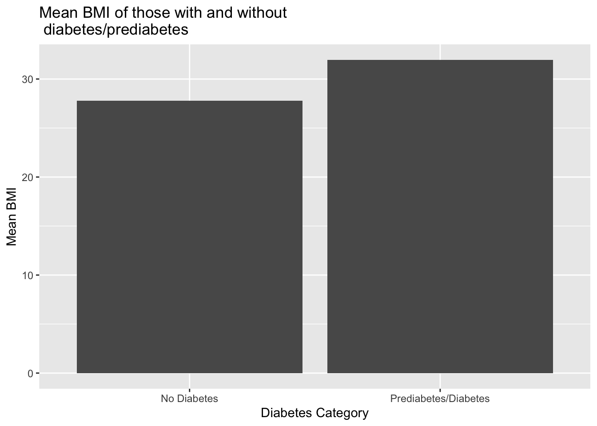
The above plot is a visualization of how those with diabetes or prediabetes have a higher mean BMI those who do not have diabetes.
# plot of mean BMI grouped by diabetes diagnosisdiabetes_data |>group_by(Diabetes_binary) |>summarize(mean_physical_health =mean(PhysHlth) ) |>ggplot(aes(x = Diabetes_binary, y = mean_physical_health)) +geom_col() +labs(x ="Diabetes Category",y ="Mean Number of Poor Physical Health Days \n (Last 30 Days)",title ="Mean number of poor physical health days for those \n with and without diabetes/prediabetes" )
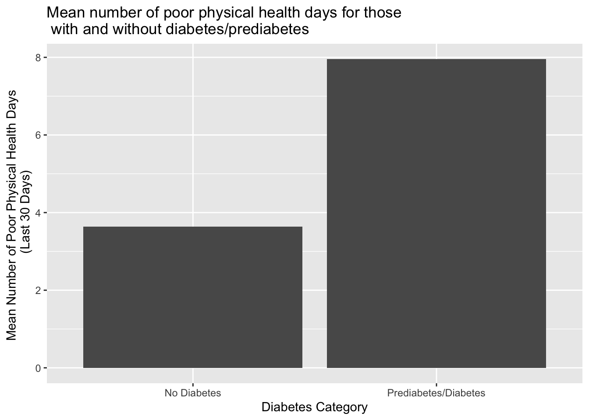
The above plot is a visualization of how those with diabetes or prediabetes have more poor physical healthy days than those who do not have diabetes.
# plot of diabetes vs income level in terms of counts observationsggplot(data = diabetes_data, aes(x = Income, fill = Diabetes_binary)) +geom_bar() +labs(y ="Count",title ="Diabetes diagnosis grouped by income level" ) +scale_fill_discrete(name ="Diabetes Category:")
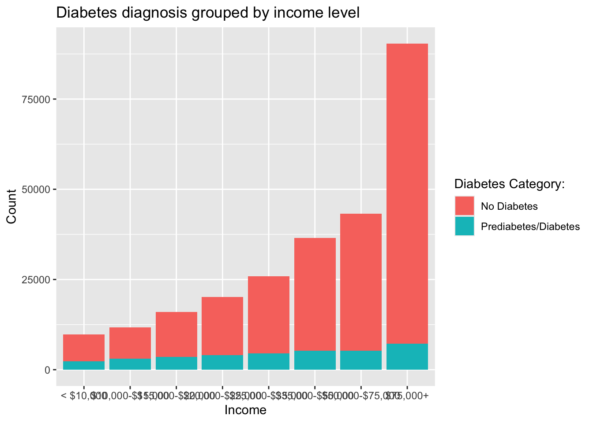
This plot shows how a larger proportion of those in lower income brackets have diabetes or prediabetes.
# plot of diabetes vs income level in terms of proportionsggplot(data = diabetes_data, aes(x = Income, fill = Diabetes_binary)) +geom_bar(position ="fill") +labs(y ="Proportion",title ="Diabetes diagnosis grouped by income level" ) +scale_fill_discrete(name ="Diabetes Category:")
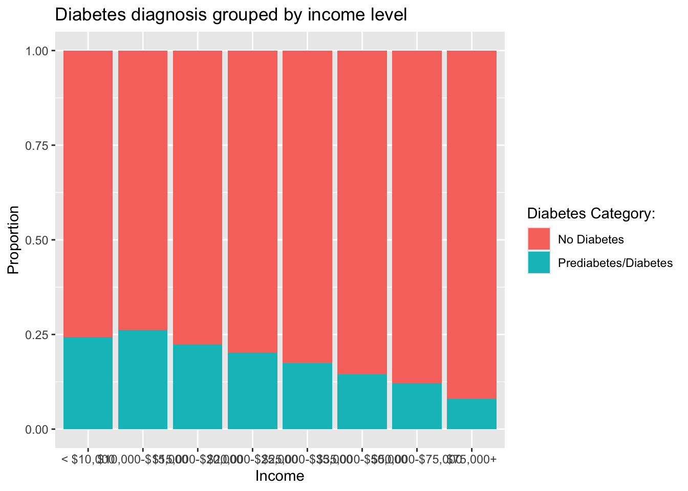
This plot shows the same thing as the one before, but shows the proportions instead of counts, making it more clear that those in lower income brackets are more likely to have diabetes or prediabetes.
# plot of diabetes vs high blood pressure in terms of counts/observationsggplot(data = diabetes_data, aes(x = HighBP, fill = Diabetes_binary)) +geom_bar() +labs(x ="High Blood Pressure?",y ="Count",title ="Diabetes diagnosis grouped by whether individual \n has high blood pressure" ) +scale_fill_discrete(name ="Diabetes Category:")
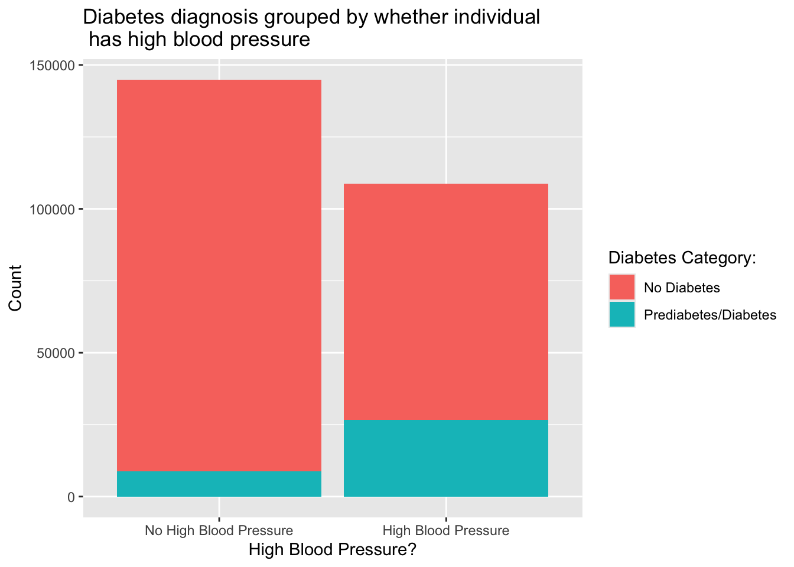
# plot of diabetes vs high blood pressure in terms of proportionsggplot(data = diabetes_data, aes(x = HighBP, fill = Diabetes_binary)) +geom_bar(position ="fill") +labs(x ="High Blood Pressure?",y ="Proportion",title ="Diabetes diagnosis grouped by whether individual \n has high blood pressure" ) +scale_fill_discrete(name ="Diabetes Category:")
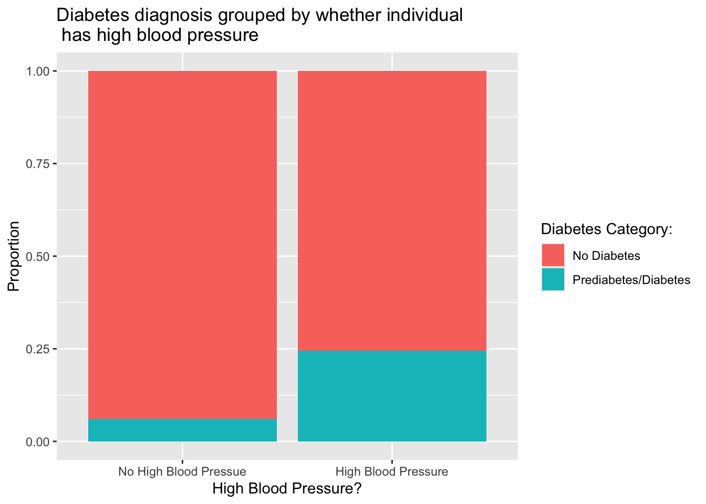
The above plots show how those with high blood pressure are more likely to have diabetes or prediabetes than those without high blood pressure. The first plot shows the counts and the second shows the proportions.
# plot of diabetes vs high cholesterol in terms of counts/observationsggplot(data = diabetes_data, aes(x = HighChol, fill = Diabetes_binary)) +geom_bar() +labs(x ="High Cholesterol?",y ="Count",title ="Diabetes diagnosis grouped by whether individual \n has high cholesterol" ) +scale_fill_discrete(name ="Diabetes Category:")
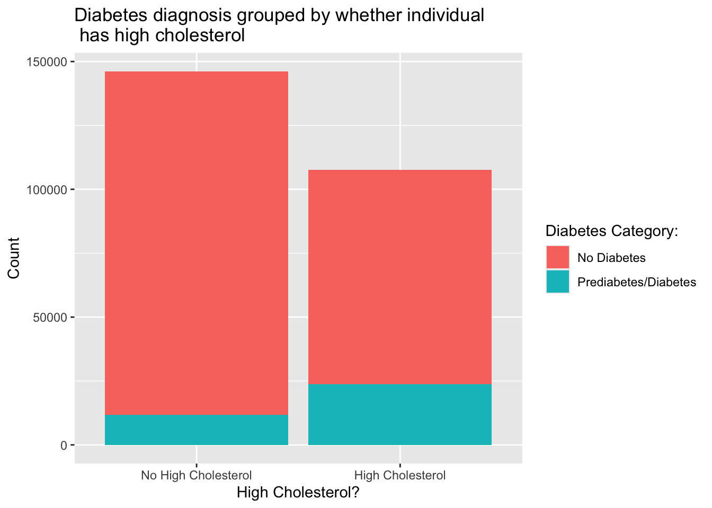
# plot of diabetes vs high cholesterol in terms of proportionsggplot(data = diabetes_data, aes(x = HighChol, fill = Diabetes_binary)) +geom_bar(position ="fill") +labs(x ="High Cholesterol?",y ="Proportion",title ="Diabetes diagnosis grouped by whether individual \n has high cholesterol" ) +scale_fill_discrete(name ="Diabetes Category:")
The above plots show how those with high cholesterol are more likely to have diabetes or prediabetes than those without high cholesterol. The first plot shows the counts and the second shows the proportions.
# plot of diabetes vs general health in terms of counts/observationsggplot(data = diabetes_data, aes(x = GenHlth, fill = Diabetes_binary)) +geom_bar() +labs(x ="General Health",y ="Count",title ="Diabetes diagnosis grouped by individuals' \n self-reported general health" ) +scale_fill_discrete(name ="Diabetes Category:")
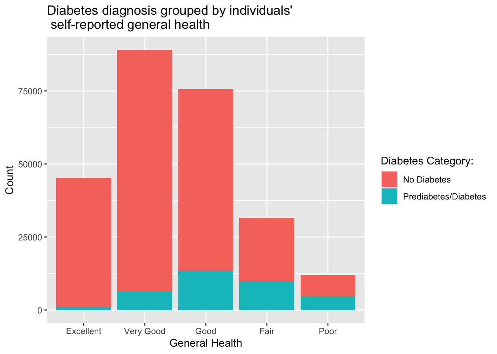
# plot of diabetes vs general health in terms of proportionsggplot(data = diabetes_data, aes(x = GenHlth, fill = Diabetes_binary)) +geom_bar(position ="fill") +labs(x ="General Health",y ="Proportion",title ="Diabetes diagnosis grouped by individuals' \n self-reported general health" ) +scale_fill_discrete(name ="Diabetes Category:")
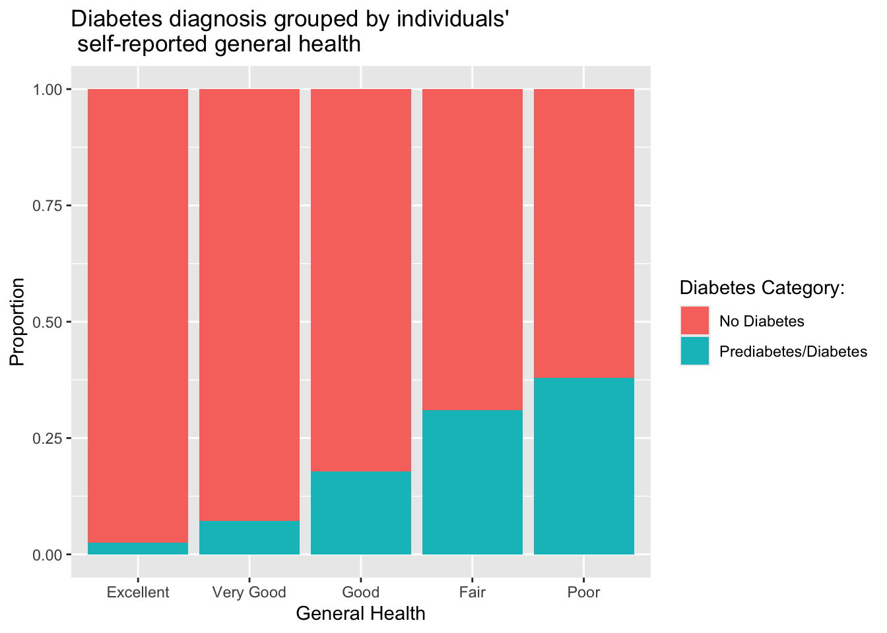
The above plots show how those who report worse general health are more likely to have diabetes or prediabetes than those who report better general health. The first plot shows the counts and the second shows the proportions.
# plot of diabetes vs heart disease/attack in terms of counts/observationsggplot(data = diabetes_data, aes(x = HeartDiseaseorAttack, fill = Diabetes_binary)) +geom_bar() +labs(x ="Heart Disease/Attack?",y ="Count",title ="Diabetes diagnosis grouped by whether individual \n has had heart disease or a heart attack" ) +scale_fill_discrete(name ="Diabetes Category:")
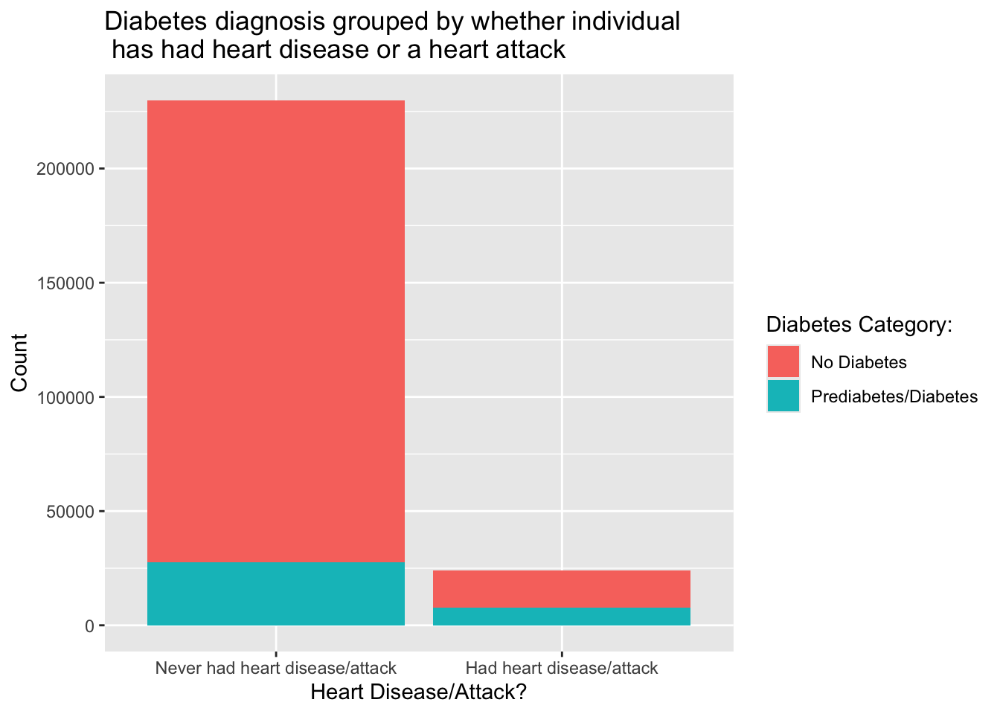
# plot of diabetes vs heart disease/attack in terms of proportionsggplot(data = diabetes_data, aes(x = HeartDiseaseorAttack, fill = Diabetes_binary)) +geom_bar(position ="fill") +labs(x ="Heart Disease/Attack?",y ="Proportion",title ="Diabetes diagnosis grouped by whether individual \n has had heart disease or a heart attack" ) +scale_fill_discrete(name ="Diabetes Category:")
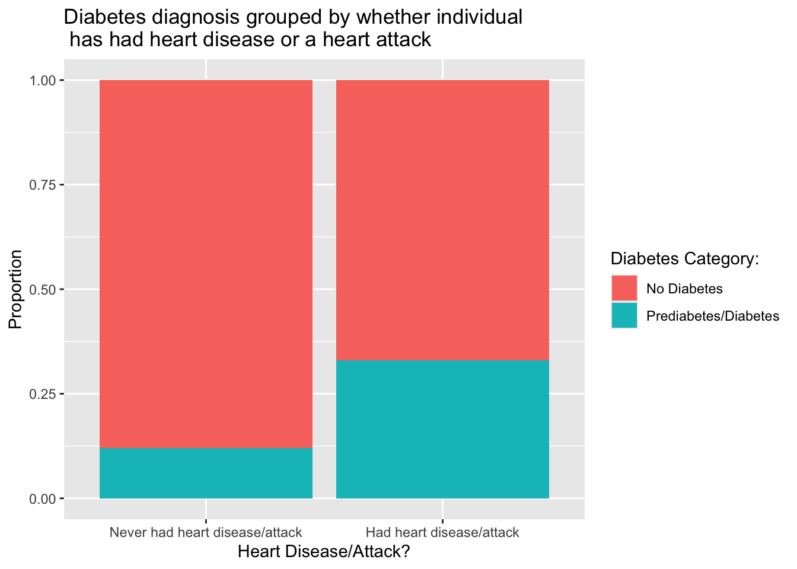
The above plots show how those who have had heart disease or a heart attack are more likely to have diabetes or prediabetes than those who have not. The first plot shows the counts and the second shows the proportions.
# plot of diabetes vs smoker in terms of counts/observationsggplot(data = diabetes_data, aes(x = Smoker, fill = Diabetes_binary)) +geom_bar() +labs(x ="Smoker?",y ="Count",title ="Diabetes diagnosis grouped by whether individual \n is or was a smoker" ) +scale_fill_discrete(name ="Diabetes Category:")
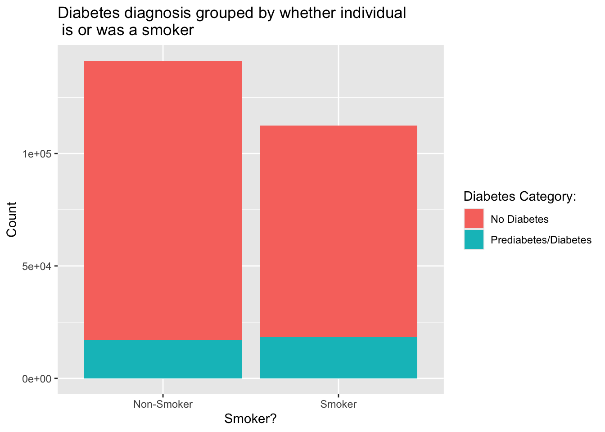
# plot of diabetes vs smoker in terms of proportionsggplot(data = diabetes_data, aes(x = Smoker, fill = Diabetes_binary)) +geom_bar(position ="fill") +labs(x ="Smoker?",y ="Proportion",title ="Diabetes diagnosis grouped by whether individual \n is or was a smoker" ) +scale_fill_discrete(name ="Diabetes Category:")
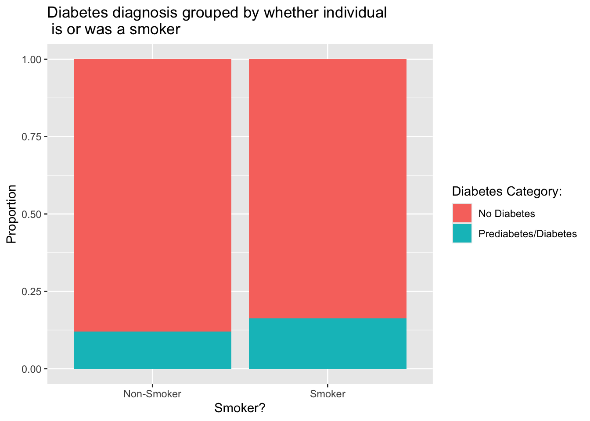
The above plots show how those who are or were smokers are more slightly likely to have diabetes or prediabetes than those who have never been smokers. Being a smoker is defined as having at least 100 cigarettes in your life. The first plot shows the counts and the second shows the proportions. While the proportion is higher among smokers, the difference is less stark than some of the other indicator variables.
# plot of diabetes vs veggies in terms of counts/observationsggplot(data = diabetes_data, aes(x = Veggies, fill = Diabetes_binary)) +geom_bar() +labs(x ="Eats Vegetables?",y ="Count",title ="Diabetes diagnosis grouped by whether individual \n regularly eats vegetables" ) +scale_fill_discrete(name ="Diabetes Category:")
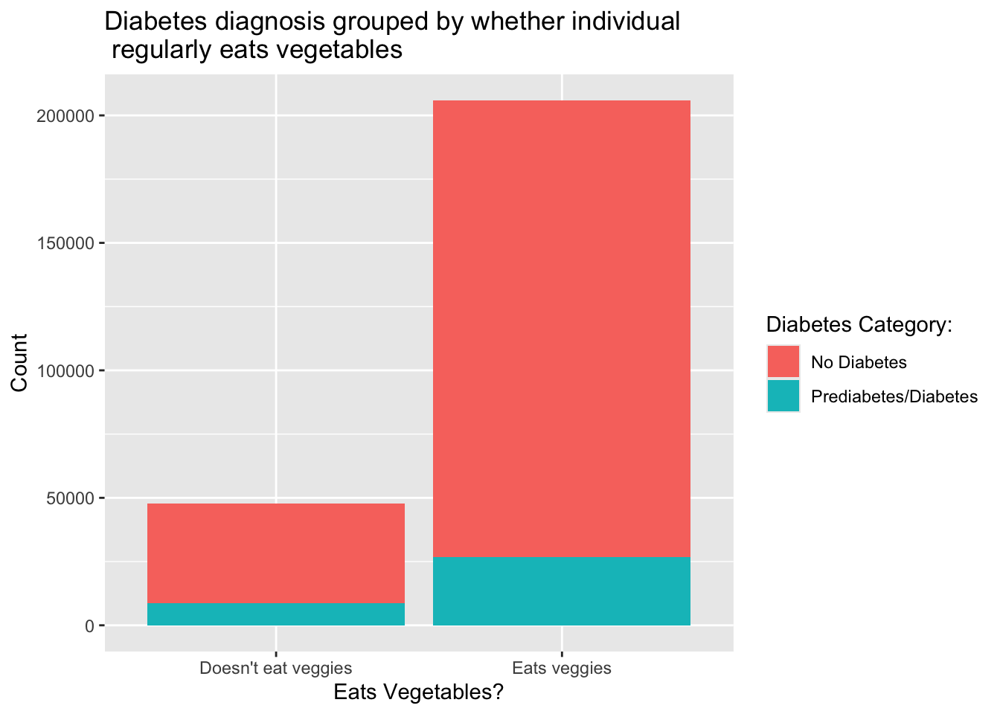
# plot of diabetes vs veggies in terms of proportionsggplot(data = diabetes_data, aes(x = Veggies, fill = Diabetes_binary)) +geom_bar(position ="fill") +labs(x ="Eats Vegetables?",y ="Proportion",title ="Diabetes diagnosis grouped by whether individual \n regularly eats vegetables" ) +scale_fill_discrete(name ="Diabetes Category:")
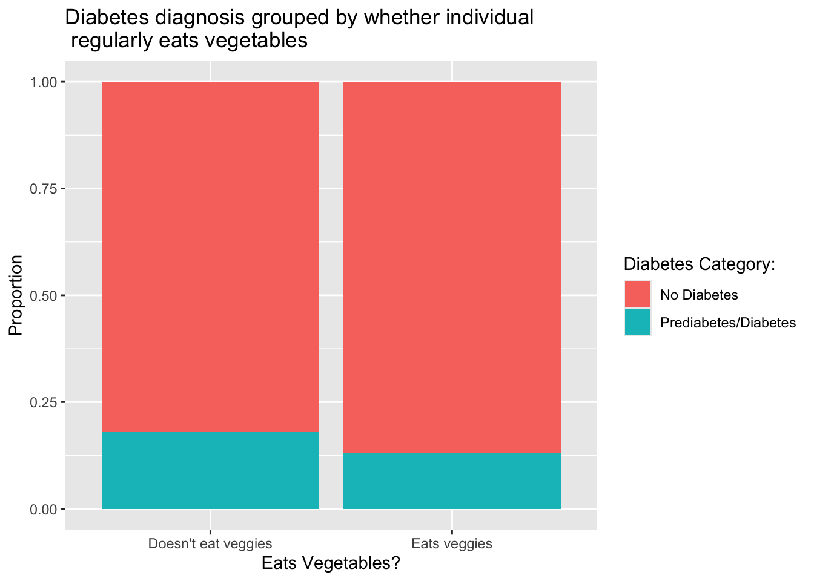
The above plots show how those who do not regularly eat vegetables are more likely to have diabetes or prediabetes than those who do. The first plot shows the counts and the second shows the proportions.